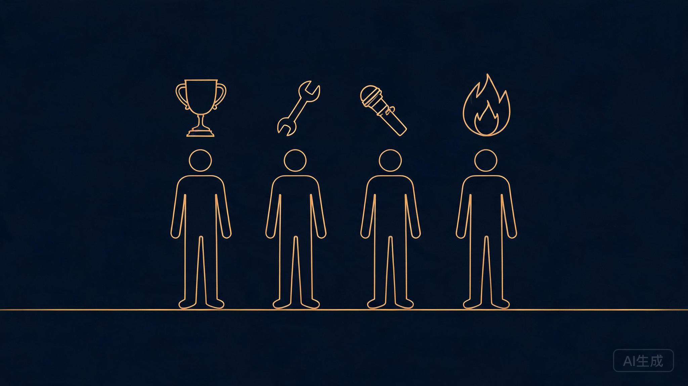

Day17 · 2026-08-18 · 挑战30天自学Web出海
来到第 17 天，个人感觉：技术的学习可以暂时告一段落了。之前一直困扰我的海外收款问题，看了很多人的分享，总结起来基本就 3 条路：
做好攻略，跑一趟香港开银行账户，可以多申请几个，比如中银、众安、汇丰、天星等。
不去香港的话，听说有的银行支持存个 50 万，免去柜台办理。
直接办理英国、美国公司，请代理帮忙搞定。
PART
说实话，这几条路就第一条路稍微好走一点，但也要提前准备好：出入境通行证、不同银行需要的材料、提前开通漫游。到了香港可能还要排很长的队，看了很多网友的分享，一些银行可能还会拒绝你的开户申请。
第二条路，不考虑港股交易，存 50 万是浪费，到时资金回国内可能有些障碍或者一些手续费。
第三条路目前没有必要——现在是学习阶段，生意还没出首单呢，适合收入到一定量级且稳定后再考虑注册海外公司。
我在想，有没有更加便捷的方式呢？现在是在搭建和测试完整的生意闭环，便捷一点的方式哪怕多一点佣金也是可以接受的。
PART
在咨询了两位大佬后（1 位月入万刀，1 位月入 4 万刀），果然找到了一个更便捷的途径，我正在测试中。
— 三条路 vs 捷径
「遇到卡点，问 AI、网上搜索、向原来圈子的身边人问，也是没有答案的，自己折腾了一段时间绕不过去。这时主动链接有经验的大佬，可能会帮你快速迈过这一关。一个信息差，就可以让你少走弯路。」
但同时也注意：你跟这些大佬打交道的频率，别每天一点小事就去问，人家很忙，也会反感的。真的帮到你后要及时表示感谢，最好是口头的 + 实际的——一句真心的感谢，一个小红包，点杯咖啡奶茶，或者请他出来吃个饭，又能学到更多，还能加深一层链接。
PART

— 4 类值得链接的人
1、有持续性结果的人——有结果的人，可能只是运气；但能持续有结果的人，肯定就是实力多过运气了。先不管结果是大是小，他们几乎每个人都踩过坑，并且事实证明当下他们的闭环是通的，他们身上有实打实的经验教训，这非常重要。
2、实干派——有的人谈起某些话题，那叫一个高谈阔论、天花乱坠；一落到行动上，啥都不是。你一问他落地细节，他就支支吾吾、顾左右而言他，这种人就是纸上谈兵，就是纸老虎。如果你的方向是去忽悠别人，可以学学，但这不可能长久。我们要向实干派学习，实干出真知，真实的结果就是最好的说服力。
3、爱分享的人——无论是何种形式的分享，他本身就是一个信息源。比如前面提到那位万刀大佬，就是特别爱分享的人。再如我写公众号这件事，一篇小小的文章，可能会对另一些人有所启发和帮助，哪怕只有一丁点，这也是一种价值。
4、"九有"之人——"九有"是指有目标、有信念、有想法、有激情、有方法、有执行、有定力、有复盘、有迭代，肯不断挑战自己的人。这类人可能已经有结果了，有的人可能还在拿结果的路上，这类人离拿到结果通常会越来越近。
我是未迟，正在挑战 30 天自学 web 出海，如果你有兴趣和相关问题，欢迎交流，我们下期见。